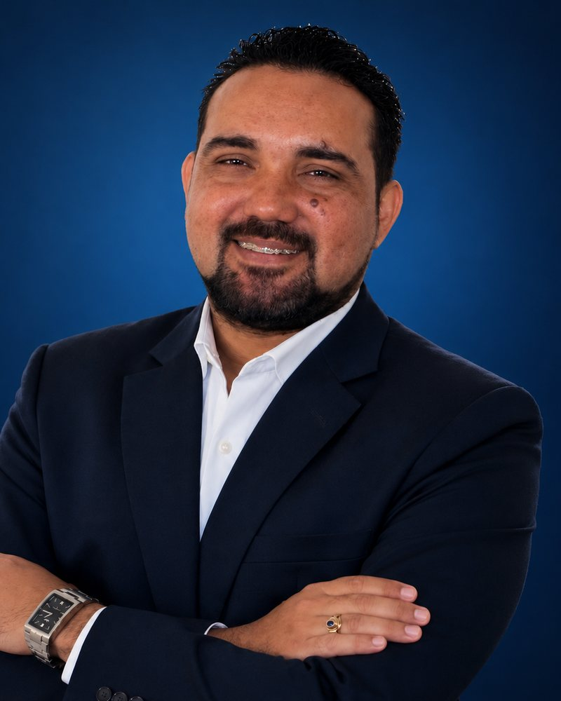

Evaluación de oportunidades
Revisamos ubicación, características del proyecto, perfil de comprador, demanda potencial y horizonte de inversión.
Soy Rovir Reyes. Te acompaño a conocer y evaluar oportunidades inmobiliarias turísticas en República Dominicana, con información clara, criterio y atención cercana.
Una conversación clara es un buen primer paso. Sin presión y con información.

Comprar una propiedad es una decisión importante. Mi trabajo es ayudarte a entender la oportunidad completa, más allá de las fotografías y el precio de entrada.
Revisamos ubicación, características del proyecto, perfil de comprador, demanda potencial y horizonte de inversión.
Te ayudo a identificar los documentos, condiciones contractuales y datos que conviene conocer antes de avanzar.
Conversamos sobre tus objetivos, aclaramos tus dudas y organizamos los próximos pasos durante el proceso de compra.
República Dominicana ofrece mercados distintos. La ubicación, el tipo de propiedad y el público al que se dirige cada proyecto importan.

Un mercado turístico dinámico con distintas zonas y formatos residenciales.

Entorno costero con identidad propia y atractivo para distintos perfiles.

Exploramos otras ubicaciones según tus objetivos y criterios de inversión.
La mención de destinos no constituye una recomendación de compra. Cada oportunidad debe evaluarse individualmente.
Primero entendemos qué buscas. Después ponemos la información sobre la mesa para que puedas valorar tus opciones con calma.
Hablamos de presupuesto, propósito de compra, plazo y tipo de propiedad que tienes en mente.
Comparamos ubicación, precio, forma de pago, costos asociados, documentación y características del proyecto.
Resolvemos dudas y coordinamos los siguientes pasos con los profesionales y las entidades correspondientes.
Soy Rovir Reyes, asesor especializado en inversión inmobiliaria turística en República Dominicana. Mi formación jurídica aporta una mirada atenta a la documentación, las condiciones de compra y los detalles que merecen ser comprendidos.
Creo en una asesoría profesional y humana: escuchar primero, explicar con claridad y acompañar sin crear expectativas irreales. Trabajo en colaboración con los profesionales, inmobiliarias y desarrolladores que participan en cada operación.
La información correcta te permite hacer mejores preguntas y comparar oportunidades con mayor criterio.
No mires solo los ingresos estimados. Considera mantenimiento, administración, vacancia, impuestos y otros gastos.
Identifica quién vende, qué estás reservando, cuáles son las condiciones y qué documentos respaldan la operación.
Organiza documentos, pagos, representación y comunicación para conocer cada paso antes de comprometerte.
Mi enfoque está en la inversión inmobiliaria turística en República Dominicana, incluyendo apartamentos y propiedades en destinos de interés turístico.
Sí. Podemos conversar a distancia, revisar la información disponible y organizar los pasos del proceso para que tengas claridad antes de tomar decisiones.
Conviene revisar quién comercializa el proyecto, la documentación disponible, las condiciones del contrato, el calendario de pagos, los costos recurrentes y las características reales de la zona y del inmueble.
Escríbeme por WhatsApp y cuéntame si buscas invertir, adquirir una segunda vivienda o conocer el mercado. A partir de ahí podemos conversar sobre tus objetivos.
Si estás explorando la posibilidad de invertir en República Dominicana, podemos comenzar con una conversación. Quiero conocer tus objetivos y ayudarte a identificar qué vale la pena analizar.